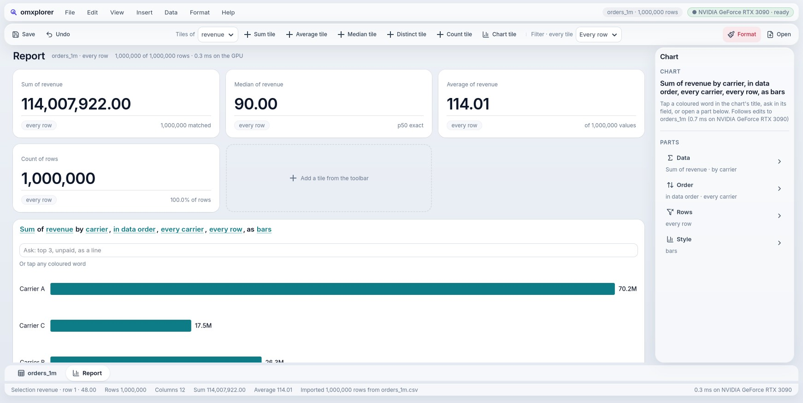

A data workspace where a million rows answer in under a millisecond, on your own GPU, and every button is a tool an AI agent can call.
arrow keys, space or swipe · 18 slides, about two minutes
Spreadsheets choke past a million rows. Warehouses answer in seconds and send a bill.
AI agents drive apps through screenshots and pixel coordinates. It's slow and it breaks.
Most workstations have one. Data apps leave it idle while the CPU struggles.

Sheets, pivots, charts and reports over your CSV and Parquet files.
About 2,100 lines of Mojo, built from omxcode's components, run by omxcore.
a million orders, every tile recomputed in 0.3 ms · RTX 3090
Sum of revenue by product, largest first, as bars
Median of revenue by product, largest first, as bars
a median per group over 1M rows: 6.4 ms on the GPU · omxcode README
all Mojo: no Python, no JavaScript framework, no C++ in the middle
No round trip. The engine is linked into the app, like SQLite.
No copy, on Linux. GPU frames go straight to the window (saves 4–5 ms a frame).
Just the diff. The host patches the native widgets that changed.
struct Main(App):
var name: String
var clicks: Int
def update(mut self, event: Event):
if event.message == GREET:
self.clicks += 1
def view(self) -> View:
var greeting = "Hello, " + self.name + "! (click " + String(self.clicks) + ")"
return VStack(
Text(greeting, style=TITLE),
Button("Greet", on_tap=GREET, style=PROMINENT),
spacing=20,
)the same file opens on Linux (GTK), the web, Android, Mac; iPhone builds
Sentence([Word("Sum", ASK_COMBINE, "word-combine"), Word(" of "), Word("amount", ASK_VALUE, "word-value")])
for w in words:
if w.msg != NO_MSG: # a token: tap it to see its choices
line.append(Button(w.text, w.msg, TOKEN).tag(w.tag))
else: # plain words: " of ", ", "
line.append(Text(w.text, style))
# a tag names the button; the agent host turns every tagged button into an MCP tool,
# so "word-combine" is something a person taps and an agent callsa chart over 1M rows
a frame, scrolling a 1M-row grid (p95)
20M points in one frame
to open a 100M-row file, streamed
RTX 3090 · the repo's own checks re-run each one · honest edge: a 100M-row median chart takes about 0.7 s
goal 38 · median of medians, p95 49.1 ms · Rust + Polars + egui · JS + FastAPI + Polars · JS + DuckDB-WASM · docs/data-benchmark.md
No screenshots, no coordinates. A button's tag is its tool's name.
The screen is the permission model. A disabled button is no tool. A dialog's buttons exist only while it's open.
One sentence for both. The words you tap are the words the agent asks.
a real session · omxcode README, docs/agent.md
Mac checked on GitHub's runners · iPhone compiles and signs, hasn't run on a phone yet · the GPU path is NVIDIA today
the warehouse: rows → a reel, faces blurred, ID burned in
the drone: what got worse → the next flight plan
One slot, two engines. Classic GPU vision today; a model plugs into the same place and gives the same rows.
Rows are rows. "Delivered, but the label never shows on camera" is one SQL join.
Every step is a tool. Analyze, Make a reel, Cut it: an agent calls what you tap.
which damaged pallets does the carrier owe for?
You make the links. Drag a column onto a card and confirm. Nothing joins until you do.
Documents become rows. The OCR runs locally, inside the app.
Every answer shows its proof: the frame with the damage, and the page with "Exceptions: None".
recall on the damaged frames
precision
to scan the 1,140-frame warehouse
on our generated footage, scored against its truth · RTX 3090 · models run on Linux + NVIDIA only, for now
powers it: the GPU engine
builds it: write once, native everywhere
local AI, on the same GPU
the look: springs and solid surfaces (this site; omxplorer next)
Read on: GitHub · the agent docs · omxlabs